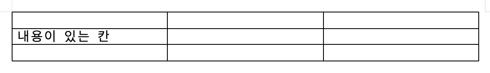

글자가 든 칸을 글줄보다 얇게 만들려 할 때
이웃 칸에 남는 높이가 없습니다
대상 칸에 남는 높이가 없습니다
칸은 자기 안의 글줄보다 얇아질 수 없습니다. 글자가 한 줄 들어 있으면 그 한 줄 높이가 바닥이고, 거기 닿으면 그 방향으로는 더 못 갑니다. 빈 칸은 훨씬 얇아질 수 있어(최소 2.7px) 같은 표에서도 글자가 든 칸 쪽만 막힙니다.
대신 반대 방향으로 옮기거나, 글자 크기를 줄이거나, 표(행)를 먼저 키운 뒤 어긋내세요.
